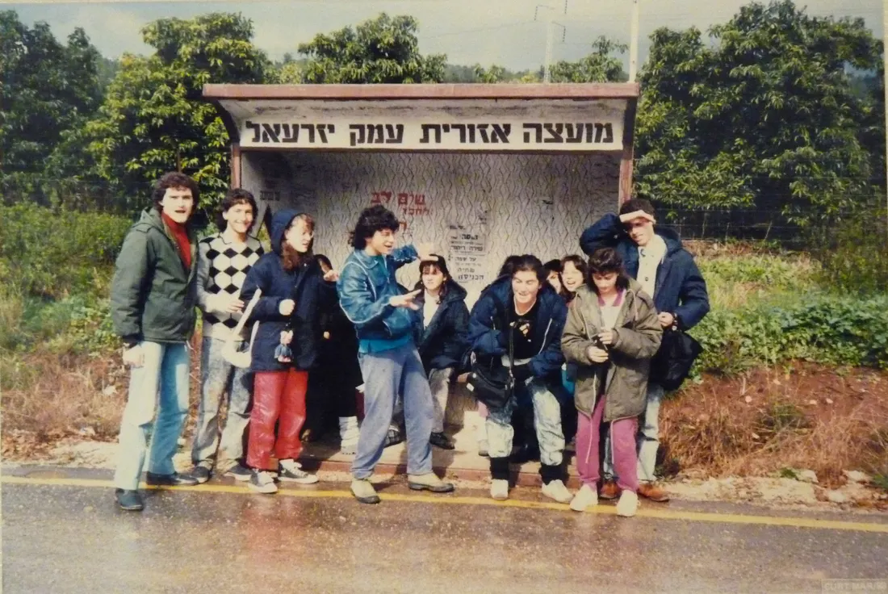
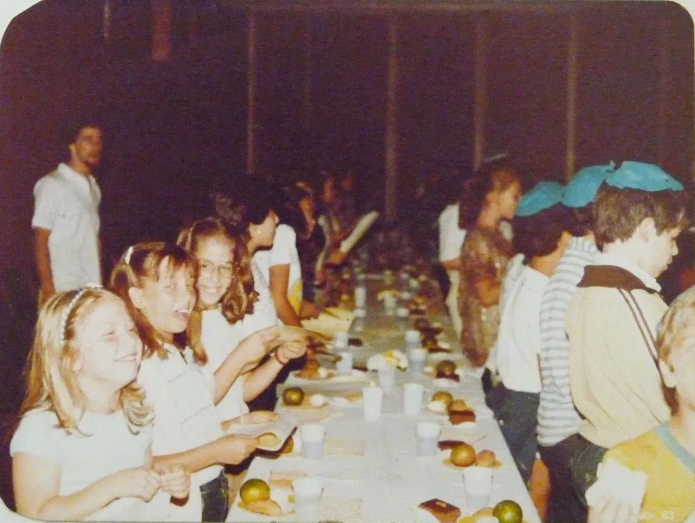
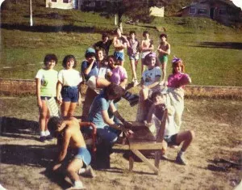
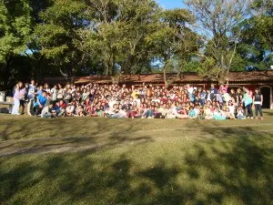
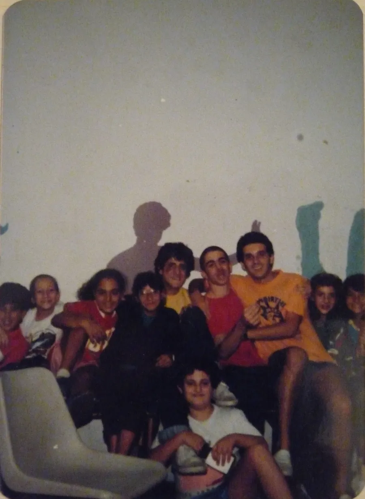

Quem somos · História
De um grêmio juvenil a uma tnuá continental
Mais de sessenta anos de sábados. A história abaixo é a que está guardada nos arquivos da tnuá, contada como ela foi escrita.
-
1958 – 1959
A ideia
Começa a amadurecer a ideia — até então formada exclusivamente pelo Setor “A”, escoteiros e bandeirantes — de que a juventude da CIP precisava se estruturar também de outra forma. Com a orientação de David Sztulman (z’l) e a participação de jovens de 14 a 18 anos, forma-se o Setor “B”: o Grêmio Juvenil Educativo, dentro do Departamento de Juventude da CIP.
-
1959
Dividir para poder educar
O Setor “B” funciona seis meses como grêmio de atividades gerais. Logo fica claro que não há como fazer atividade com 120 jovens sem organizar os menores em grupos. A nova diretoria divide os participantes por idade e por centro comum de interesses — o embrião das kvutzot.
-
1960 – 1961
Nasce a Chazit
O Setor “B” deixa de ser grêmio e vira movimento juvenil educativo judaico, com o nome “Lehava”. Em um seminário nacional em Campos do Jordão, jovens de São Paulo, do Rio (ARI) e do Rio Grande do Sul (Sibra) decidem se filiar a um movimento juvenil sionista apartidário sul-americano. Na Argentina, no Uruguai e no Chile já existia a “Jazit ha Noar”. Depois de longos debates sobre filiação, simbologia e linha ideológica, cria-se a Chazit Hanoar, com Mazkirut Central em São Paulo.
-
1962
O primeiro Machon
O movimento se firma na coeducação e começa aos doze anos de idade, com 315 jovens. Criam-se os cursos de formação de madrichim e é obtida e preenchida a primeira vaga para o Machon L’Madrichim Chutz LaAretz. Desde então, todo ano a tnuá manda madrichim para Israel com a kvutzá sul-americana da Chazit.
-
1966
Solelim, a partir dos sete anos
A idade mínima das kvutzot cai. Filas intermináveis aguardavam vaga em todas as idades. Uma preocupação constante da direção era dar conteúdo judaico autêntico às kvutzot: os madrichim se reuniam regularmente para estudo, análise, crítica e criação de material.
-
1967
Shnat Sherut
A tnuá começa a participar também do “Shnat Sherut”, nova opção para jovens conhecerem e viverem temporariamente em Israel.
-
Anos 1970
1200 chaverim
Jovens chegam trazidos pelos pais e pelos amigos, e a Chazit se torna a maior tnuá de São Paulo e do Brasil. Começam as primeiras aliot individuais de chaverim, que se prolongam até hoje. Festas como o terceiro Seder de Pessach mobilizam um número imenso de chaverim; seminários locais e nacionais fazem todos vibrarem.
-
1974
Um novo sheliach
Em abril é contratado Tzvi Harari (Tzviká), que dá novo impulso ao terreno ideológico. Vivência religiosa comunitária, de um lado, e expressão sionista realizadora, de outro, passam a ser mutuamente aceitas e viram princípios educativos do trabalho diário dos madrichim.
-
Anos 1980
Beit Bogrim, Garin Aliá e o escritório em Israel
Com a partida do casal Sztulman para a aliá, os jovens assumem de vez a direção do movimento — o que culmina na criação do Beit Bogrim e do primeiro Garin Aliá, na Tnuá-Garin Nurit. Os laços com Israel se firmam com o escritório da Chazit em Israel, a Lishkat HaKesher, e com a aceitação, na Veidá de 1983, de Kfar Charuv como Meshek Iad da tnuá. A partir daí, o movimento passa a trabalhar com shlichim vindos de Israel.
-
1990
A tnuá se abre para a comunidade
A Chazit passa por uma nova etapa e é uma das grandes responsáveis pelo ato de solidariedade a Israel na Guerra do Golfo. Em Israel, aprofunda os laços com o Movimento Kibutziano Unificado (TAKAM) e o Kibutz Mefalsim passa a ser Meshek Iad do movimento.
-
1992
A Casa da Juventude reformada
Concluída a reforma da Casa da Juventude, cresce a aproximação com a Avanhandava e com a CIP, onde muitos chaverim trabalham principalmente na área educativa.
-
Hoje
Cerca de 120 chanichim por sábado
A Chazit São Paulo realiza duas machanot por ano (kaitz e choref), manda seus peilim para o Shnat Hachshará e mantém laços fortes com a Chazit continental — São Paulo, Rio, Porto Alegre e Montevidéu. Os chaverim realizam atividades em parceria com a CIP, mas mantêm sua independência. Nos últimos anos a tnuá cresceu tanto em número de chaverim quanto em qualidade de peulot e discussões chinuchiot.
Chazak VeAlê!





Tem fotos, atas, itonim ou materiais antigos da Chazit guardados em casa? A vaadat Chibur cuida do arquivo do movimento — escreva para a gente.